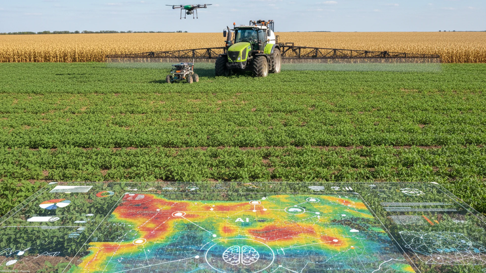
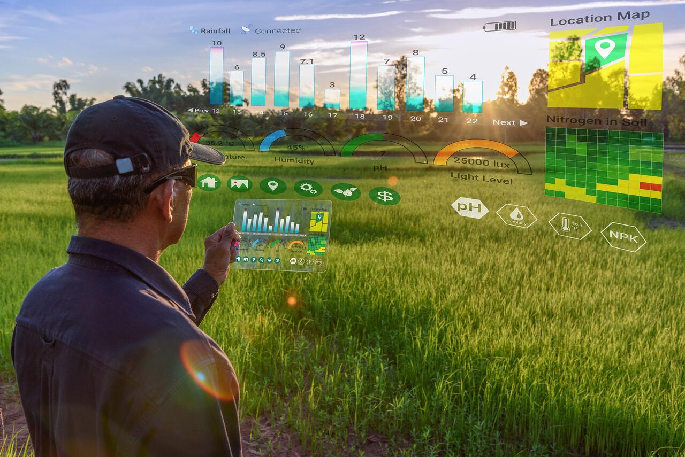

Agricultura de Precisão no Brasil
Apesar da importância do Brasil no cenário agrícola, a agricultura de precisão ainda enfrenta dificuldades de adoção no país. Na área acadêmica, desde 2004, a cada 2 anos, é realizado o Congresso Brasileiro de Agricultura de Precisão (ConBAP), que procura evidenciar a atual condição da AP no país e dá aos especialistas um rumo das metas futuras.

Inicialmente, o ConBAP era realizado e organizado pela Escola Superior de Agricultura “Luiz de Queiroz” (ESALQ) e, a partir de 2018, passou a ser organizado pela Associação Brasileira de Agricultura de Precisão e Digital (AsBraAP), uma organização formada por universidades, instituições de ciência e tecnologia e empresas da iniciativa privada para fomentar o desenvolvimento, inovação e difusão das práticas, técnicas e tecnologias da agricultura de precisão e digital.
Inovações e Atuação da Embrapa
A Embrapa tem contribuído ativamente com esse tema por meio de projetos de pesquisa originários da Rede de Agricultura de Precisão da Embrapa.
A rede de pesquisa criada em 2009 permaneceu ativa até 2022, tendo como principais resultados uma renomada trilogia de livros lançados nos anos de 2010, 2014 e 2024. Atualmente, esses projetos estão estrategicamente vinculados ao portfólio de Transição Digital da empresa, impulsionando a eficiência no campo.
Expansão na Cadeia Canavieira
As modernizações na cadeia canavieira nacional certamente implicarão em uma expansão exponencial da agricultura de precisão. Conheça os pilares desse avanço:
Drones e Sensores
Uso de drones e sensores avançados para monitorar a saúde da lavoura em tempo real.
Gestão de Dados
Softwares modernos de gestão de dados coletados diretamente no maquinário de campo.
Melhoramento Genético
Desenvolvimento focado de novas variedades para máxima adaptabilidade e resiliência.
Bioinsumos
Uso de bioinsumos e otimizações geradas pela colheita mecanizada da cana crua.

Aliar a agricultura de precisão ao cultivo canavieiro manterá o Brasil como o maior produtor mundial de cana-de-açúcar e, sem dúvida, contribuirá para diminuir os impactos ambientais.
Interação com o Leitor
Deixe suas impressões ou dúvidas sobre o futuro do agro digital abaixo: